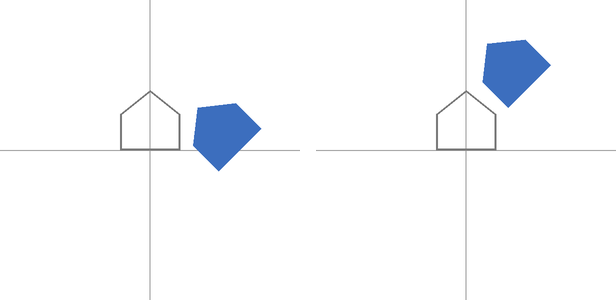
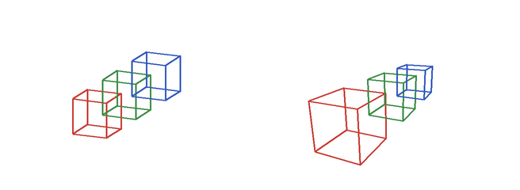

座標変換と投影
3 次元の物体を画面に描くには、物体の頂点の座標を、いくつかの座標系を経由して画面上の画素の座標に変換する。本章では、物体を動かす変換、カメラから見た座標への変換、3 次元を 2 次元に写す投影を、ベクトルと行列で説明した 4 × 4 の行列で表す。
本章のコードは transform.py にある。
2 次元の基本的な変換
まず、考え方を 2 次元で確かめる。2 次元の点 \((x, y)\) を同次座標 \((x, y, 1)\) で表すと、拡大縮小、回転、平行移動は、それぞれ次の 3 × 3 の行列で表せる。
変換 |
行列 |
意味 |
|---|---|---|
拡大縮小 |
\(\begin{pmatrix} s_x & 0 & 0 \\ 0 & s_y & 0 \\ 0 & 0 & 1 \end{pmatrix}\) |
原点を中心に、x 方向に \(s_x\) 倍、y 方向に \(s_y\) 倍する。 |
回転 |
\(\begin{pmatrix} \cos \theta & -\sin \theta & 0 \\ \sin \theta & \cos \theta & 0 \\ 0 & 0 & 1 \end{pmatrix}\) |
原点を中心に、反時計回りに \(\theta\) だけ回転する。 |
平行移動 |
\(\begin{pmatrix} 1 & 0 & t_x \\ 0 & 1 & t_y \\ 0 & 0 & 1 \end{pmatrix}\) |
x 方向に \(t_x\)、y 方向に \(t_y\) だけ移動する。 |
33def rotate_2d(degrees: float) -> FloatArray:
34 """原点を中心に反時計回りに回転する行列。"""
35 t = np.radians(degrees)
36 c, s = np.cos(t), np.sin(t)
37 return np.array([
38 [c, -s, 0.0],
39 [s, c, 0.0],
40 [0.0, 0.0, 1.0],
41 ])
変換の合成と順序
複数の変換は、行列の積で 1 つにまとめられる。ただし、ベクトルと行列で見たとおり、行列の積は順序を入れ替えると結果が変わる。図 9 は、原点に置いた家の形（灰色の輪郭）に、45 度の回転と x 方向への 1.5 の平行移動を、異なる順序で行った結果（青）である。

図 9 回転してから平行移動した結果（左、\(TR\)）と、平行移動してから回転した結果（右、\(RT\)）
210def transform_order_figure() -> FloatArray:
211 """回転と平行移動を掛ける順序を変えた 2 つの結果を並べる。
212
213 左: 先に 45 度回転し、次に x 方向に 1.5 平行移動する(T @ R)。
214 右: 先に x 方向に 1.5 平行移動し、次に 45 度回転する(R @ T)。
215 """
216 r = rotate_2d(45.0)
217 t = translate_2d(1.5, 0.0)
218 return hstack([house_panel(t @ r), house_panel(r @ t)])
左の図では、家はその場で回転してから右に移動している。右の図では、家は先に右に移動し、その後に原点を中心に回転したため、斜め上に移動している。回転と拡大縮小は常に原点を中心に行われるので、物体をその場で回転させたい場合は、物体の中心が原点にある状態で回転してから、目的の位置に平行移動する。つまり、変換の行列は \(T R S\)（拡大縮小 \(S\)、回転 \(R\)、平行移動 \(T\) の順に行う）の形にするのが基本である。
3 次元の変換
3 次元でも考え方は同じで、4 × 4 の行列を使う。拡大縮小と平行移動は、2 次元の行列に z の成分を加えたものになる。回転は、どの軸のまわりに回転するかによって行列が異なる。たとえば、y 軸のまわりの回転の行列は次のとおりである。
87def rotate_y(degrees: float) -> FloatArray:
88 """y 軸のまわりの回転の行列(y 軸の正の向きから見て反時計回り)。"""
89 t = np.radians(degrees)
90 c, s = np.cos(t), np.sin(t)
91 return np.array([
92 [c, 0.0, s, 0.0],
93 [0.0, 1.0, 0.0, 0.0],
94 [-s, 0.0, c, 0.0],
95 [0.0, 0.0, 0.0, 1.0],
96 ])
任意の向きへの回転は、x 軸、y 軸、z 軸のまわりの回転を組み合わせて表せる。ただし、3 つの角度で回転を表す方法（オイラー角）には、組み合わせによって回転の自由度が 1 つ失われる問題（ジンバルロック）がある。そのため、ゲームエンジンなどでは、回転を四元数（クォータニオン）で表すことが多い。
座標系の流れ
3 次元の頂点が画面上の画素の位置になるまでに、座標は次の座標系を順に経由する。
座標系 |
意味 |
次の座標系への変換 |
|---|---|---|
モデル座標 |
物体ごとに決めた座標系。物体の中心を原点にすることが多い。 |
モデル変換（\(M\)） |
ワールド座標 |
場面全体で共通の座標系。 |
ビュー変換（\(V\)） |
カメラ座標 |
カメラを原点とし、カメラが -z 方向を向く座標系。 |
投影変換（\(P\)） |
クリップ座標 |
投影変換の結果の同次座標 \((x, y, z, w)\)。画面の外にはみ出す部分の切り取り（クリッピング）をこの座標系で行う。 |
透視除算（\(w\) で割る） |
正規化デバイス座標（NDC） |
画面に映る範囲が、x、y、z のいずれも -1 から 1 になる座標系。 |
ビューポート変換 |
スクリーン座標 |
画素を単位とする画面上の座標。 |
（ラスタライズ） |
モデル変換、ビュー変換、投影変換は、掛け合わせて 1 つの行列 \(PVM\) にまとめられる。この行列を MVP 行列ということがある。
151def to_clip(matrix: FloatArray, points: FloatArray) -> FloatArray:
152 """(N, 3) の点に 4 × 4 の行列を掛け、(N, 4) の同次座標を返す。"""
153 homogeneous = np.hstack([points, np.ones((len(points), 1))])
154 return np.asarray((matrix @ homogeneous.T).T)
ビュー変換
ビュー変換は、ワールド座標をカメラ座標に変換する。カメラの位置 \(\mathbf{e}\)、注視する点 \(\mathbf{t}\)、カメラの上の向きの目安 \(\mathbf{u}\) を与えて、次のようにカメラの 3 つの軸を求める。
前方: \(\mathbf{f} = \mathrm{normalize}(\mathbf{t} - \mathbf{e})\)
右: \(\mathbf{r} = \mathrm{normalize}(\mathbf{f} \times \mathbf{u})\)
上: \(\mathbf{u}' = \mathbf{r} \times \mathbf{f}\)
ビュー変換は、カメラの位置を原点に移す平行移動と、カメラの 3 つの軸をそれぞれ x 軸、y 軸、-z 軸に重ねる回転を組み合わせたものになる。回転の行列は、3 つの軸のベクトルを行として並べるだけで作れる。3 つの軸が互いに直交する単位ベクトルなので、その逆行列が転置行列に等しいからである。
99def look_at(eye: FloatArray, target: FloatArray,
100 up: FloatArray) -> FloatArray:
101 """ビュー変換の行列。ワールド座標をカメラ座標に変換する。
102
103 カメラを eye に置き、target の方向に向ける。up はカメラの上の向きの
104 目安である。カメラ座標では、カメラは原点にあって -z 方向を向き、
105 上が +y、右が +x になる。
106 """
107 forward = normalize(target - eye) # カメラの前方
108 right = normalize(np.cross(forward, up)) # カメラの右
109 true_up = np.cross(right, forward) # カメラの上
110 rotation = np.eye(4)
111 rotation[0, :3] = right
112 rotation[1, :3] = true_up
113 rotation[2, :3] = -forward
114 return rotation @ translate(-eye[0], -eye[1], -eye[2])
物体を動かす代わりにカメラを動かしても、画面に映る結果は同じである。ビュー変換は、カメラを動かす変換の逆変換になっている。
投影変換
投影変換は、3 次元の空間のうち画面に映る範囲を、正規化デバイス座標の -1 から 1 の立方体に写す。投影の方法には、平行投影と透視投影がある。
平行投影
平行投影は、カメラ座標の x、y をそのまま画面上の位置にする方法である。奥にある物体も手前にある物体も同じ大きさに見える。設計図、CAD、2 次元のゲームなどで使われる。
透視投影
透視投影は、遠くの物体ほど小さく写す方法である。人間の目やカメラと同じ見え方になる。カメラ座標の点 \((x, y, z)\) を、カメラから距離 1 の位置にあるスクリーンに写すと、相似な三角形の関係から、スクリーン上の位置は \((x / (-z), y / (-z))\) になる（カメラは -z 方向を向いているので、見える範囲では \(z < 0\) である）。
この「\(-z\) で割る」処理は、行列の掛け算だけでは表せない。そこで、投影変換の行列で \(w = -z\) となるようにしておき、後で透視除算として \(w\) で割る。縦方向の視野角を \(\theta\)、画面の縦横比（幅 / 高さ）を \(a\)、カメラから見える範囲の手前の距離（ニアクリップ面）を \(n\)、奥の距離（ファークリップ面）を \(f\) とすると、透視投影の行列は次のとおりである。
3 行目は、透視除算の後の z が、カメラからの距離 \(n\) で -1、\(f\) で 1 になるように決めたものである。この z は、3 次元のラスタライズで物体の前後関係を判定するために使う。
117def perspective(fovy_degrees: float, aspect: float, near: float,
118 far: float) -> FloatArray:
119 """透視投影の行列。
120
121 fovy_degrees は縦方向の視野角、aspect は画面の幅 / 高さである。
122 カメラから near から far までの範囲が、正規化デバイス座標の
123 z = -1 から 1 に対応する。
124 """
125 s = 1.0 / np.tan(np.radians(fovy_degrees) / 2.0)
126 return np.array([
127 [s / aspect, 0.0, 0.0, 0.0],
128 [0.0, s, 0.0, 0.0],
129 [0.0, 0.0, (far + near) / (near - far),
130 2.0 * far * near / (near - far)],
131 [0.0, 0.0, -1.0, 0.0],
132 ])
図 10 は、奥に向かって並べた同じ大きさの 3 つの立方体を、平行投影と透視投影で描いたものである。透視投影では、奥の立方体ほど小さく写り、平行な辺が奥で 1 点に近づいていく。

図 10 平行投影（左）と透視投影（右）
ビューポート変換
最後に、透視除算で得た正規化デバイス座標を、画素を単位とするスクリーン座標に変換する。正規化デバイス座標の x、y は -1 から 1 の範囲で、y 軸は上向きである。一方、画像の座標は左上が原点で、y 軸は下向きである。そのため、y の符号を反転する。
157def to_screen(clip: FloatArray, width: int, height: int) -> FloatArray:
158 """同次座標を w で割り(透視除算)、画面の画素の座標に変換する。
159
160 戻り値は (N, 3) の配列で、各行は (x, y, z) である。x と y は画素の
161 座標(y 軸は下向き)、z は正規化デバイス座標の z(-1 から 1)である。
162 """
163 ndc = clip[:, :3] / clip[:, 3:4]
164 x = (ndc[:, 0] + 1.0) * 0.5 * width
165 y = (1.0 - ndc[:, 1]) * 0.5 * height
166 return np.stack([x, y, ndc[:, 2]], axis=-1)
法線の変換
面の法線のような向きのベクトルは、頂点の座標と同じ行列では正しく変換できない場合がある。たとえば、物体を x 方向にだけ 2 倍に引き伸ばすと、斜めの面の傾きが変わる。このとき、法線にも同じ拡大縮小を掛けると、法線は面に垂直でなくなる。
法線を正しく変換するには、モデル変換の左上の 3 × 3 の部分 \(M_3\) の逆行列の転置 \((M_3^{-1})^{\mathsf{T}}\) を掛ける。回転だけ、または全ての方向に同じ倍率の拡大縮小だけを含む変換であれば、\((M_3^{-1})^{\mathsf{T}}\) は \(M_3\) の定数倍になるので、正規化すれば同じ結果になる。本資料のレンダラーでは、次の関数で法線を変換する。
244def transform_normals(model: FloatArray, normals: FloatArray) -> FloatArray:
245 """モデル変換に合わせて法線を変換する。
246
247 法線には、モデル変換の左上 3 × 3 の逆行列の転置を掛ける。
248 """
249 normal_matrix = np.linalg.inv(model[:3, :3]).T
250 result = (normal_matrix @ normals.T).T
251 return np.asarray(result / np.linalg.norm(result, axis=-1, keepdims=True))